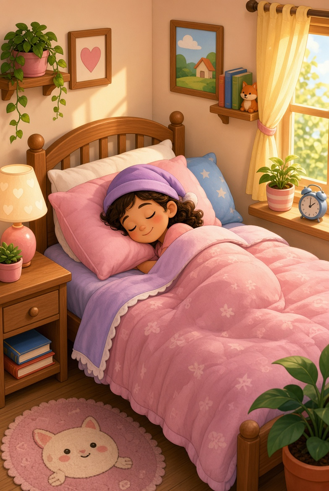
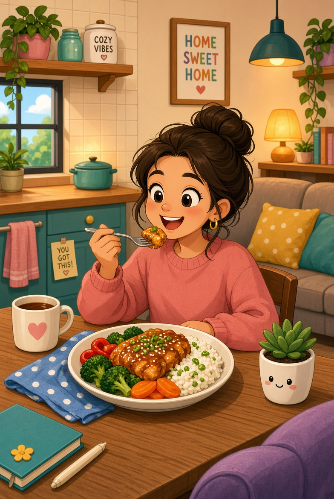
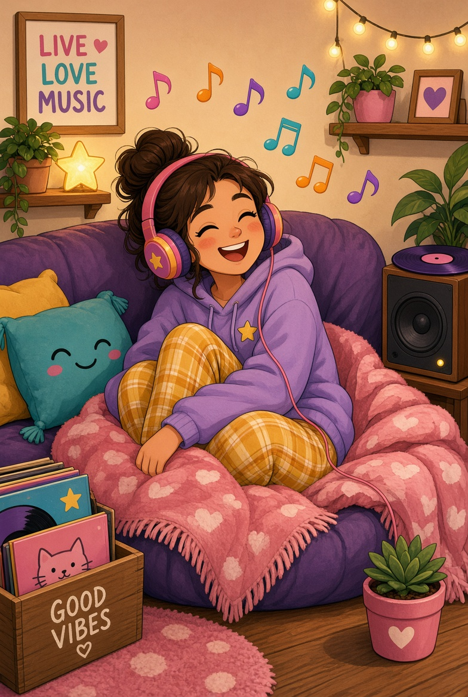
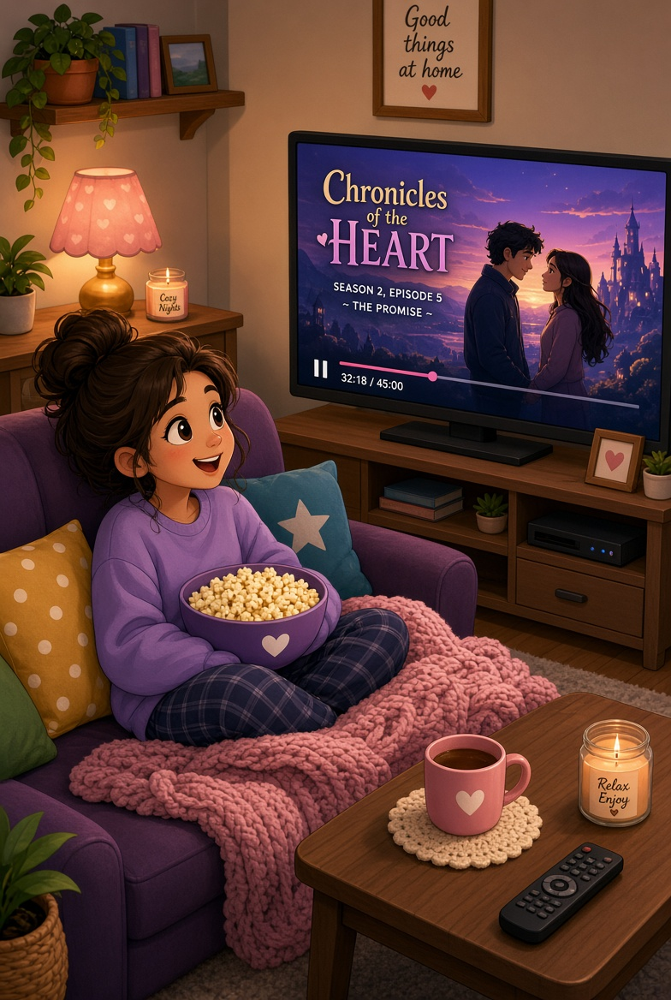
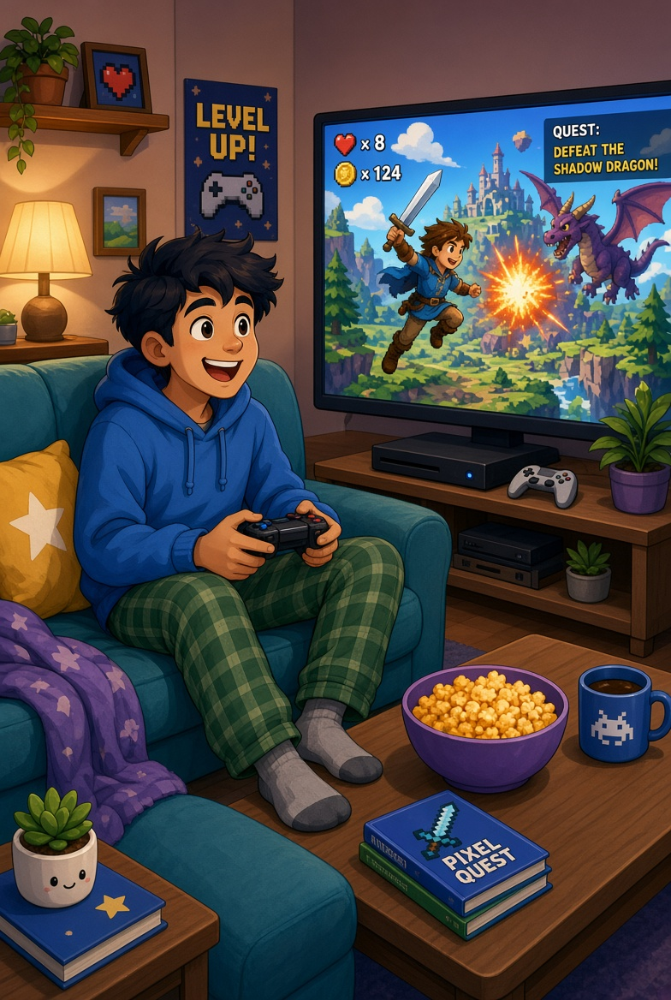

Meu primeiro post
Por: Vitoria Borges
Boas-vindas ao meu novo blog! Aqui vou compartilhar dicas de programação e curiosidades da área de tecnologia.
Dicas de programação e curiosidades de tecnologia
Por: Vitoria Borges
Boas-vindas ao meu novo blog! Aqui vou compartilhar dicas de programação e curiosidades da área de tecnologia.
Por: Vitoria Borges
Continue explorando comigo o universo da programação e da tecnologia. Novos conteúdos em breve!





O que proporciona: Restauração física e mental. Dormir bem regula os hormônios do estresse, melhora a memória, fortalece o sistema imunológico e recarrega as energias para o dia seguinte.
O que proporciona: Prazer imediato e nutrição. Saborear sua comida favorita em casa ativa o sistema de recompensa do cérebro, trazendo uma sensação instantânea de conforto, além de fornecer os nutrientes de que seu corpo precisa.
O que proporciona: Regulação emocional. A música tem o poder de mudar o seu humor em minutos. Ela ajuda a relaxar após um dia estressante, estimula o foco ou dá aquela dose de motivação e energia quando você precisa.
O que proporciona: Entretenimento e distração. Assistir a uma boa produção permite que você se desligue dos problemas rotineiros, estimula a imaginação através de boas histórias e gera momentos de lazer sem precisar sair do sofá.
O que proporciona: Estímulo cognitivo e socialização. Sejam jogos de videogame, PC ou tabuleiro, eles exercitam o raciocínio rápido e a estratégia. Quando jogados online, também ajudam a manter o contato e a diversão com os amigos.